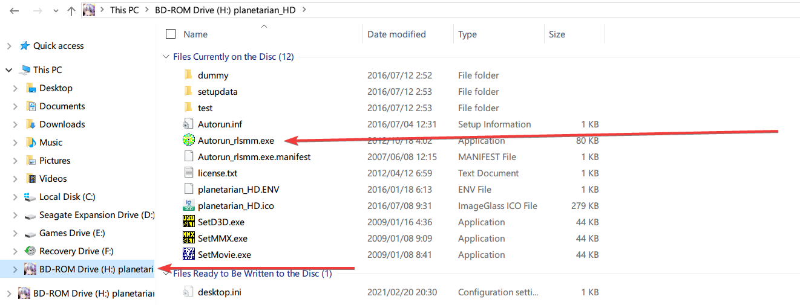
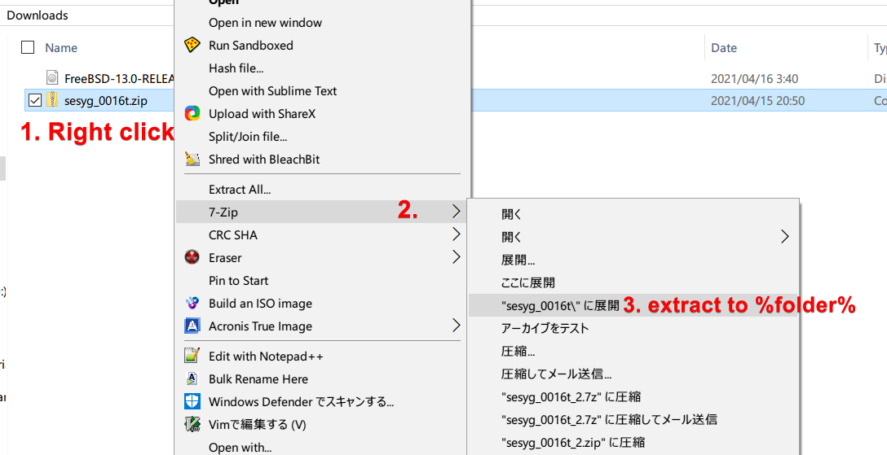
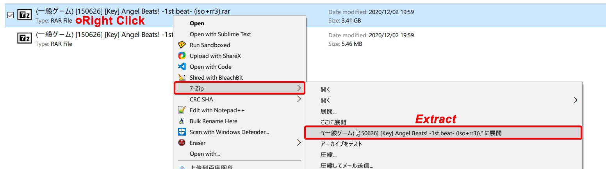
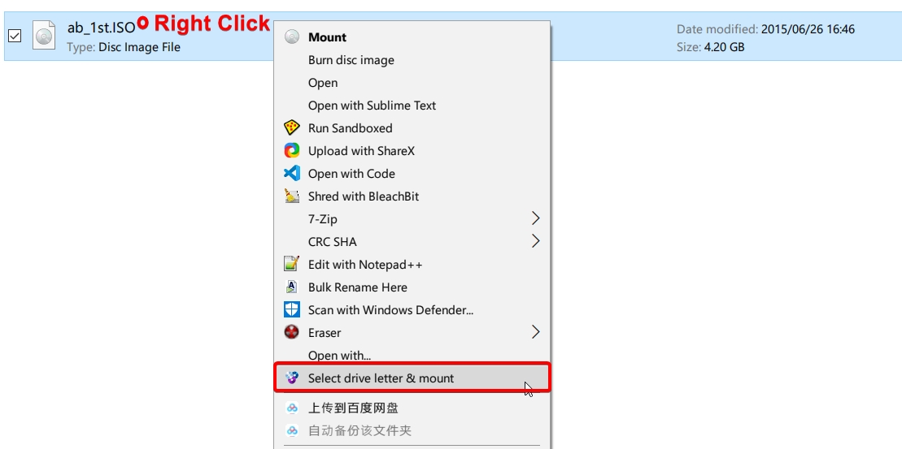
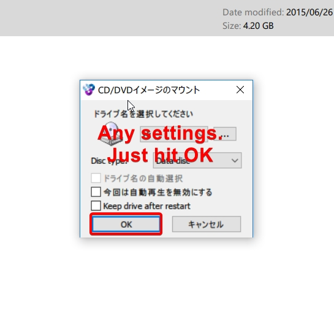
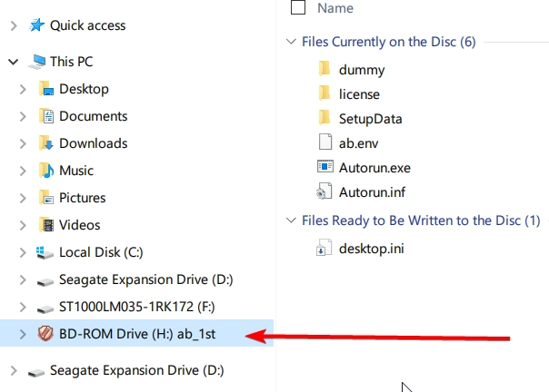
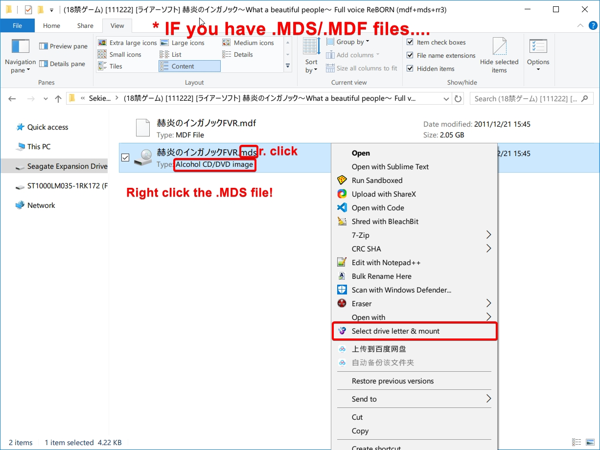
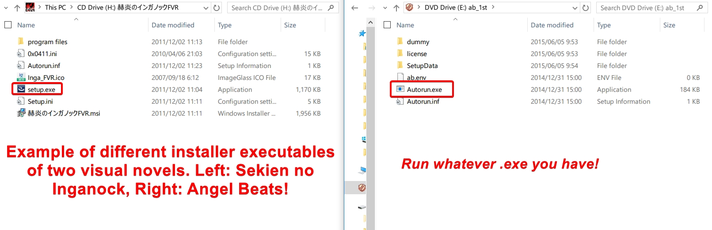
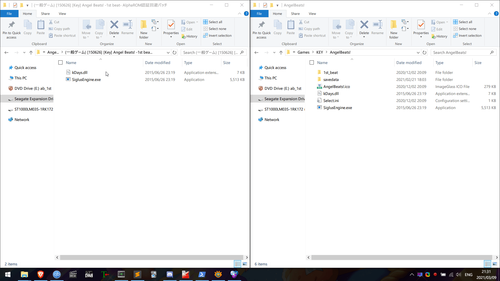

Visuals novels on Windows¶
Visual novels are always Microsoft Windows programs. If you have a Windows PC, you will always be able to run visual novels as long as your visual novel supports the Windows version you are running. For most VNs out there, Windows 7 is a minimum, older titles will also work on XP. Newer titles released after 2019 will require Windows 8.1 as a minimum.
Step 1. Japanese Locale¶
Japanese visual novels will not run without Japanese locale. Some may run, but have limited functionality, audio, visuals and saving may not work. Japanese locale is the minimum requirement for running Japanese games on your Windows PC. You may use a locale emulator, though it is less of a hassle to just change system-wide locale in my opinion.
Follow the steps below to set Japanese locale on your Windows system.
Setting Japanese locale
- Open the Run dialog box by pressing Win+R
- Type
intl.cpland press Enter - Click on the Administrative tab, go to Change system locale... and select Japanese (Japan) and click OK.
- Reboot your PC to apply the changes.
FAQ: What about "Use Unicode UTF-8 for worldwide language support"?
Keep it disabled. This is a recent feature of Windows 10. We do not need it for VNs, it is unrelated, and may cause problems.
If you're curious: It sets codepage 65001, overriding codepage 932 (Japanese locale), we do not want this.
Advanced Users: Powershell
Japanese locale can also be enabled using Windows Powershell (Administrator):
Set-WinSystemLocale -SystemLocale ja-JP; Restart-Computer
Step 2. Mounting the setup files¶
If you have bought your game on an optical disc, please insert the disc into your DVD drive. A new volume will appear on the Explorer sidebar, click on it and run the setup to proceed.

If you bought your game as digital download, it will come in a .zip file, extract it with 7-Zip
In some cases there will be no need for installation, in other cases you may need to install the game by running the setup and register with the DRM.

If you have not bought the game, it will likely become archived in a .rar, .7z or .zip format, and within it may be disc image files. Follow the instructions below to extract and mount the setup files.
Requirements:
Get 7-Zip
Get WinCDEmu
We will be using 2 pieces of software today, 7-Zip which is a tool for making and extracting archives such as .zip , .tar and .7z files, and WinCDEmu which allows us to mount image files such as .mds/.mdf, .iso.
If you have downloaded a visual novel, and it came in a .rar/.zip/.7z archive, you must extract it before you can mount the installation files. You can use 7-Zip for this.
Right click the archive > 7-Zip > Extract to %folder%

Above is an example of extracting the archive using 7-Zip.
After the archive has been extracted, we will now use WinCDEmu to mount the image that has been extracted from it.
Right click the image > Select drive letter & mount > OK

After that,

The disc image is now mounted. You should see a new volume appear on your Explorer sidebar.

.MDS/.MDF files
It is a little different if you have .MDS/.MDF files, see below.

Step 3. Installing the VN and applying patch¶
Click on the new volume that appeared on your sidebar and run the installer. See below for details.

Proceed with the installation, you may want to take note of where you installed the game. I installed Angel Beats! into D:\Games\KEY\AngelBeats!
If your visual novel came with a crack, you will need to apply this crack before you are able to launch the game. Cracks often come in the form of a .exe/.dll file found in folders/archives called "AlphaROM" or "NoDVD" or simply just "Patch" or "Crack", whatever it may be, copy these files into the installation directory of the game.
Please note that you will not need to do this if you have bought the game.
You can find an example below.

After that, you should just be able to launch the game!
Now go back to Visual Novel Guide to learn how to use Textractor with Yomichan.
Steam Games¶
If you obtained your visual novel from Steam, first check if "Japanese" is listed as a supported Interface and Subtitles language on the store page first. You can then set Japanese language within the Steam client itself.
- Open your Steam Library.
- From a game's library page, select Manage > Properties.
- Go to the Language tab.
- Select Japanese from the drop-down menu.
In other cases, the game language can be set within the game itself.
If you did not purchase the Steam game from Steam (i.e. a cracked game) you can edit the steam_api.ini file within the game's installation directory.
language=japanese
Windows: Troubleshooting¶
Please insert original disc オリジナルディスクを入れてください
Make sure you have applied the crack/patch. Some VNs require the original disc inserted at least once before it will launch. In that case, use WinCDEmu to mount the .ISO or .MDS as a DVD drive. If the problem persists, try restarting your PC.
No Crack?
If there is no crack available for your VN, and your VN does not launch, use AlphaROMdiE. See pictures within .zip file for instructions.
Direct3D, Visual C++ Related Issues
This can be easily fixed by installing DirectX here and all the Visual C++ Redistributable Runtimes here.
Garbled Text (文字化け)
Solution 1: Check Japanese locale and restart your PC.
Solution 2: Install Japanese fonts. Download this .zip file. Extract, press Ctrl+A(select all), Right click, Install, check "Do this for all current items", then Yes.
Japan Time Zone Required
Check Japanese locale and make sure all patch(es)/crack(s) are applied. If the problem persists, you wil need to use a locale emulator as this also emulates Japanese time zone too.
This Game is Japan Only!
Check Japanese locale and ensure a crack/patch is applied, if there is no crack available try using AlphaROMdiE. Or even, the Rewrite Gaijin Check Patcher, you can get that here. It's made for KEY's Rewrite but I've had success with it on other VNs too. You may also have luck using a locale emulator, as this also emulates Japanese time zone too.
Cutscenes and video not working
First, check if you are not using an N or KN edition of Windows. You can do that buy pressing Win+R and typing winver and press Enter. There you will see your Windows version and edition. If you are using an N edition, then you need to get the Media feature pack from Microsoft here.
If you are not using a N or KN edition of Windows, then make sure the game files are installed correctly, try reinstalling the game. If the problem persists, maybe try installing ffdshow and LAVFilters
Legacy Visual Novels
If your visual novel is particularly old and does not work with recent versions of Windows, you can try using a Windows XP Virtual Machine